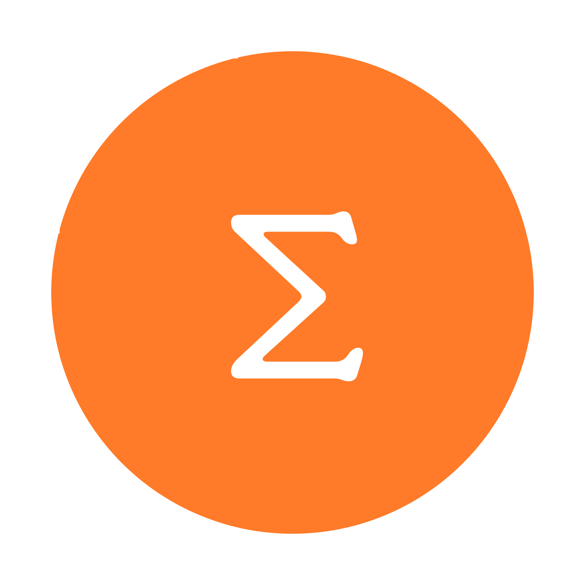
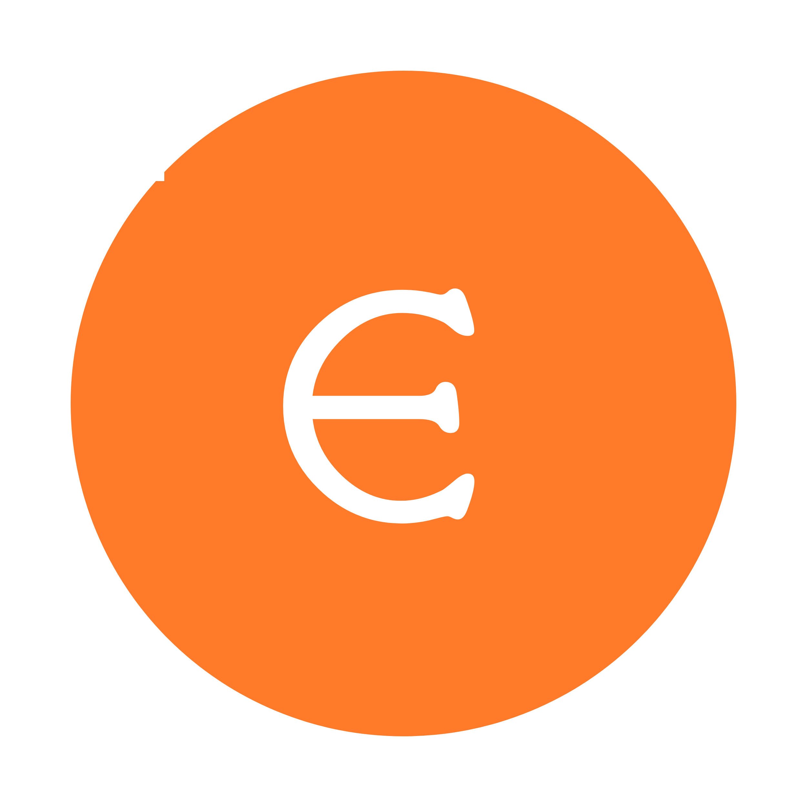
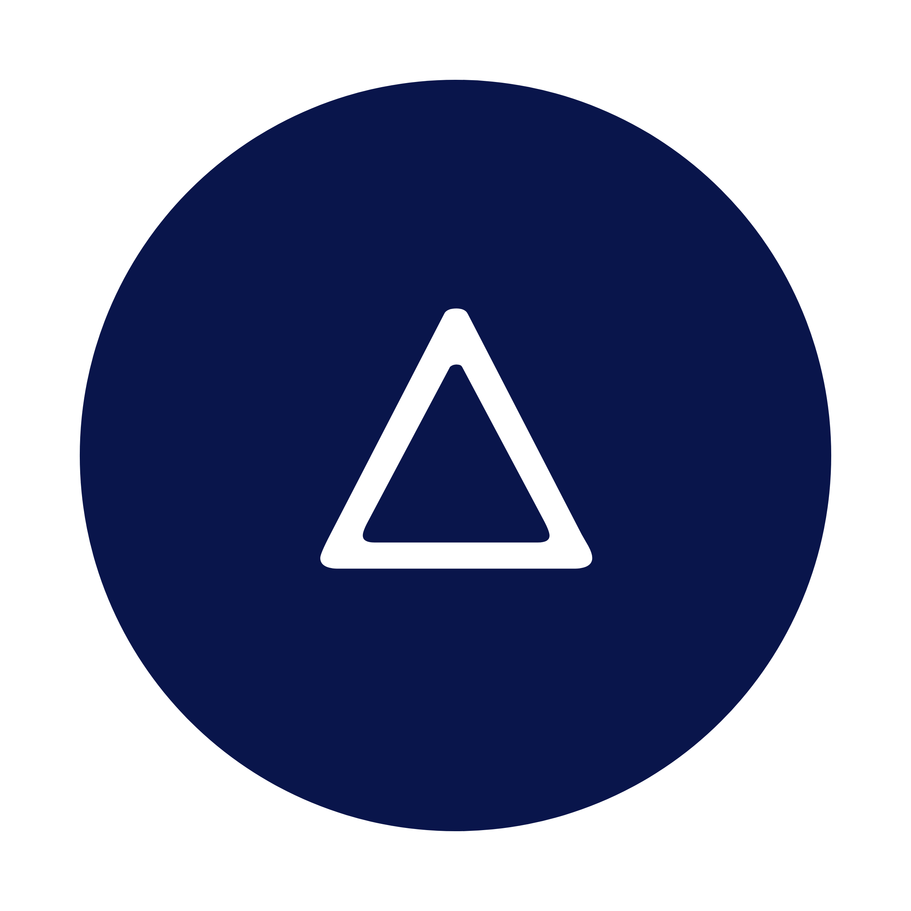
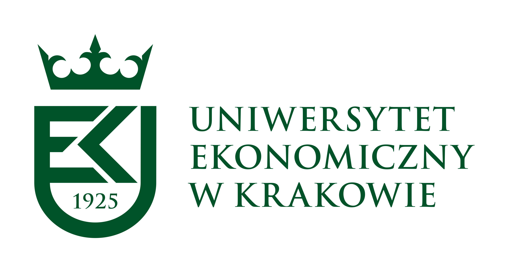
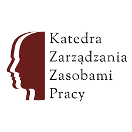
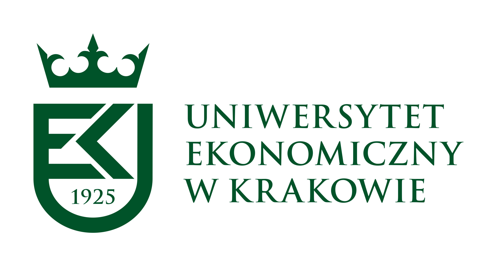
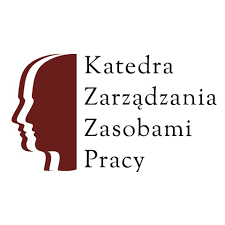

.png)
Czym jest SEED?
Stowarzyszenie Rozwoju Osobistego SEED powstało 9 marca 2018 roku.
Pomysł narodził się wśród grupy przyjaciół, członków Koła Naukowego Rozwoju Osobistego.Nie chcieli oni kończyć przygody z organizowaniem różnego rodzaju aktywności wraz z końcem studiów. Dlatego też zdecydowali się powołać do życia SEED.
Może wydawać się to dziwne, ale .... nazwa naszego stowarzyszenia może być różnie odczytywana. Dla jednych będzie to po prostu zwyczajna nazwa. Część osób z pewnością dostrzeże w niej angielskie słowo "seed" ziarno. Przyznajemy, że świetnie pasuje ono do koncepcji rozwoju. Z małego ziarenka potrafią wyrosnąć wspaniałe kwiaty czy też potężne drzewa. Jednak to też nie jest tłumaczenie, o które nam chodziło.
Tworząc Stowarzyszenie Rozwoju Osobistego SEED skupiliśmy się na naukowym,a bliżej należy powiedzieć matematycznym rozumieniu greckich liczb. Σ - Sigma - to matematyczny znak sumy,ϵ - Epsylon - oznacza małe liczby Δ - Delta - używana jest do oznaczania zmiany. Stąd właśnie nasze hasło przewodnie - Bo suma małych działań daje zmianę! 
Wierzymy, że nie trzeba robić ogromnych projektów czy od razu zmieniać drastycznie siebie czy innych. Dla nas rozwój, zmiana pochodzi z małych działań - jest ich sumą. Dlatego też jako stowarzyszenie chcemy wspierać naszych młodszych kolegów i koleżanki działaniu.
Według nas w młodych ludziach drzemie niesamowita energia potencjał. A jako starsi studenci oraz absolwenci chcemy pomagać w realizacji studenckich i społecznych projektów służąc zarówno: ϵ - szkoląc członków organizacji,ϵ - dzieląc się wiedzą oraz doświadczeniem podczas mentoringu,ϵ - użyczając narzędzia i sprzęt,ϵ - wreszcie służąc finansowaniem przedsięwzięć.
 


